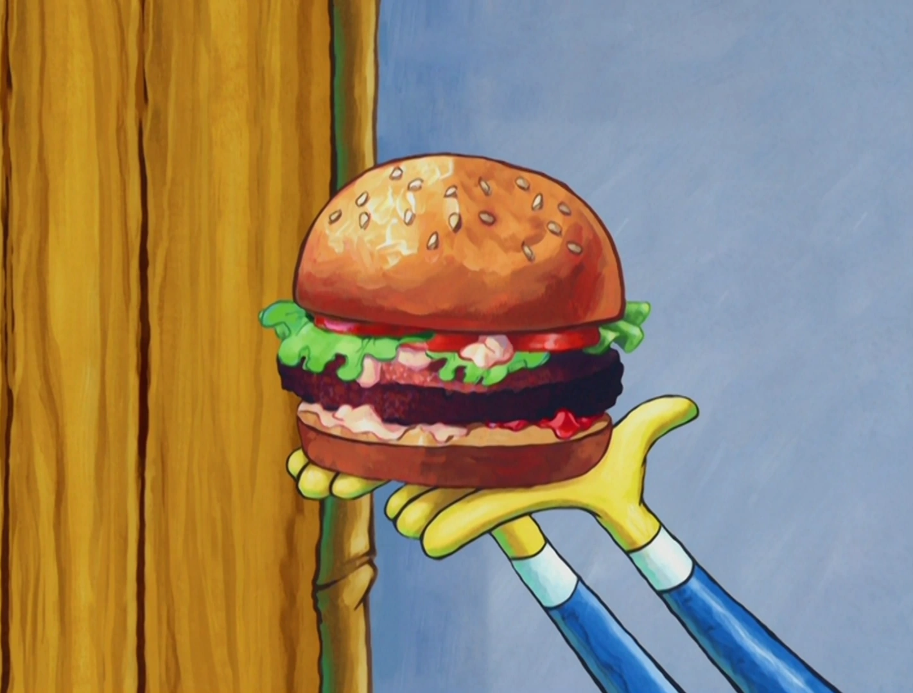

The Krabby Patty

Replete with its own cult following, The Krabby Patty is legendary in the town of Bikini Bottom. Most customers order it in its classic "all the way" form.
Ingredients
- Patty
- Lettuce
- Tomato
- Onion
- Pickles
- Ketchup
Steps
- Wash and chop vegtables (lettuce, tomato, onion, pickles).
- Cook meat on grill at 400 degrees for 10 minutes. Flip once.
- Place patty, cheese, lettuce, tomato, pickles, and ketchup on buns.
- Serve with a side of fries.
Return to Homepage